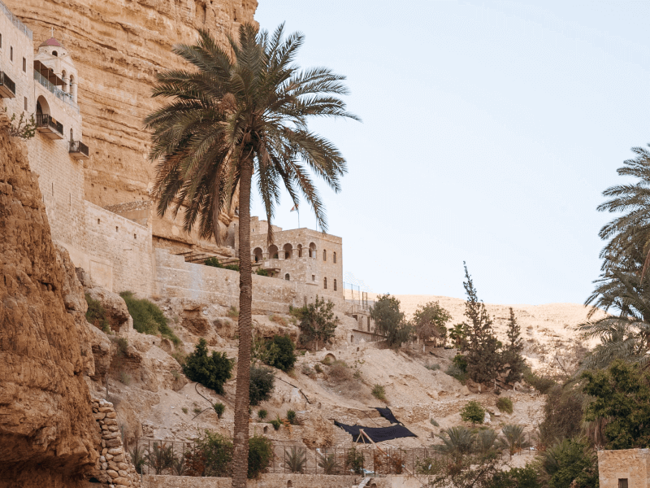
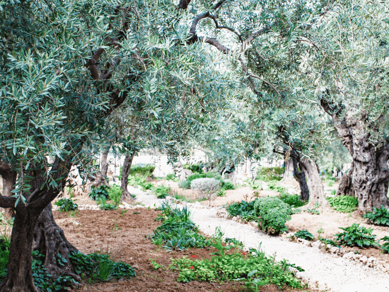
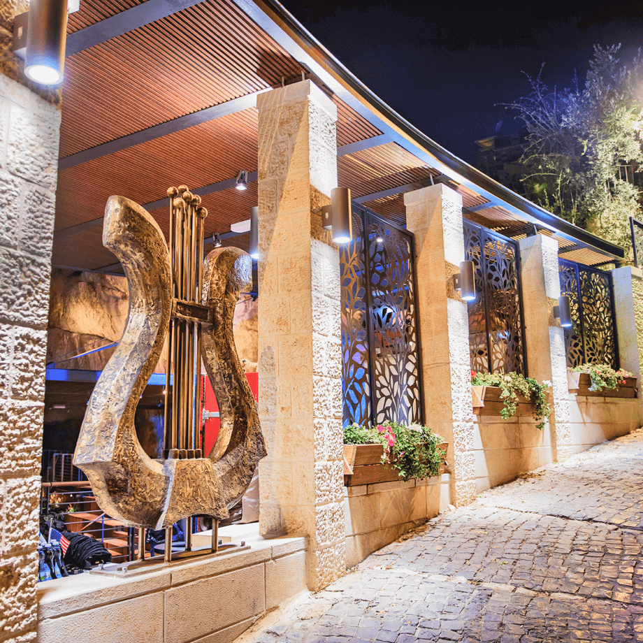

What to expect?
Visit the City of David, which symbolizes the beginning of Jerusalem’s sanctity, and then head down to Qumran National Park where the Dead Sea Scrolls were written, to Enot Tsukim, the lowest nature reserve in the world, and from there to the mountain that became a symbol – Masada National Park, towering above the Dead Sea.
- Objects of UNESCO cultural heritage 12
- Objects of UNESCO natural heritage 16
- Total number of destinations 105
-
-
-

-
-

-
-

-
-
-
-
-
City of David

The city walls, which are among the important cultural heritage assets of Jerusalem and a prominent monument in the urban landscape of the city in the past and present, were built in layers, expanded and renovated many times in the course of history, and represent the continuity of life in the city.
Today’s wall has been standing for around 480 years, and even though it is the latest of the city walls, it follows the route of the walls that have encompassed the city since Roman times.
Qumran National Park
Qumran National Park covers an area of 480 dunams. The remains of the settlement of Qumran are on display at the site, and the unique lifestyle of the Essene sect is illustrated by means of a film, exhibits, and other devices.
The Dead Sea Scrolls contain considerable information for understanding the Biblical text and Jewish life at the time of the Second Temple and the New Testament.
Enot Tsukim Reserve
Wetland habitat of rare size and quality, maintaining an impressive variety of flora and fauna species.
Remarkable landscape values – an oasis on the shores of the Dead Sea.
Major recreation and tourism site in the area.
Masada National Park
In the days of the Great Revolt, the last of the rebels against Rome entrenched themselves at Masada, and turned their desperate fight into a symbol of the struggle for freedom.
Because of the enthralling historic events that took place on the mountain, and the archaeological finds that have been revealed there, UNESCO has declared Masada National Park a World Heritage Site.
Tel Beer Sheva Park
Tel Be’er Sheva National Park is 5 km east of the city of Beersheba, by the access road to the town of Tel Sheva. The tel commands the confluence of the Hebron Stream with Beersheba Stream, and the easy passage from Beersheba-Arad Valley to the western Negev.
The tel is on the southern boundary of the civilized world, and is one of the chain of tels of south Canaan (running west from Tel Arad, through Tel Malhata, Tel Ira, Tel Mashush and Tel Be’er Sheva to the Bsor Stream) – the dividing line between the cultivated areas (in the north) and the unsettled desert to the south, where there had not been continuous permanent settlement for many generations.